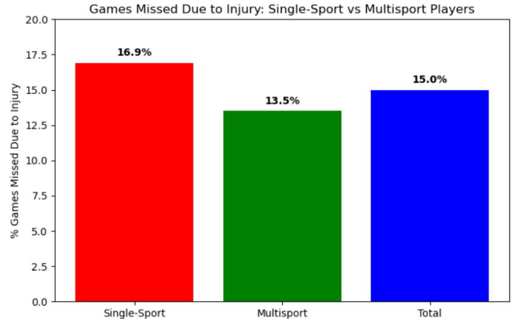
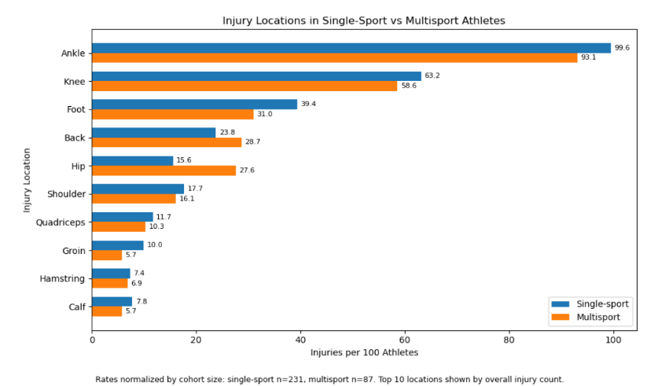
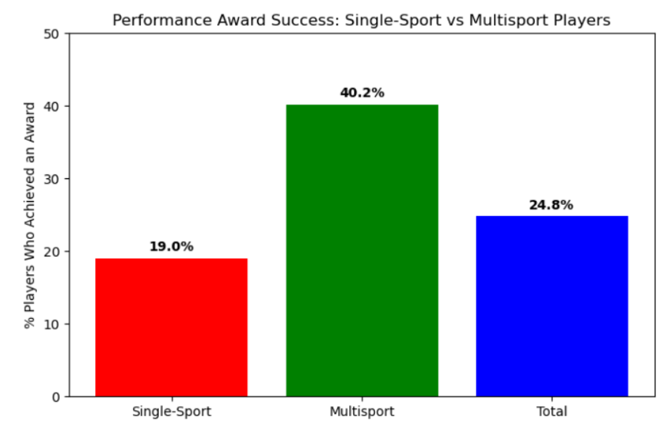
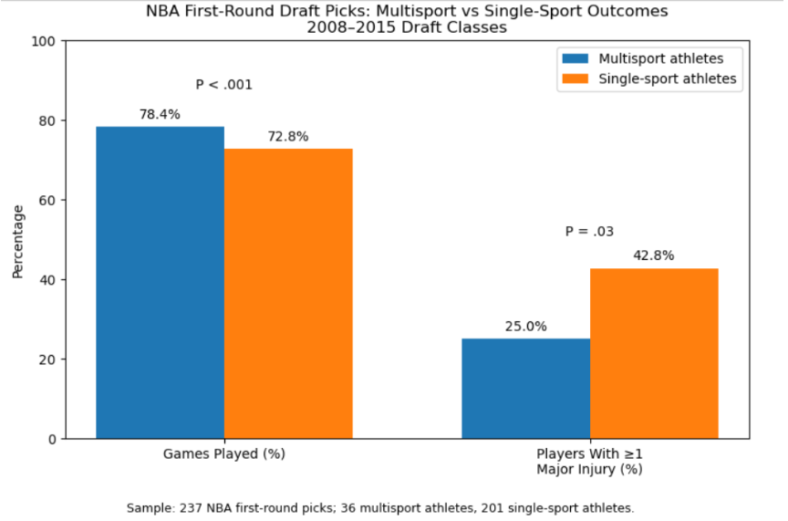

Is it Time To Enroll Your Kids in Another Sport?
By Jessica Nguyen | June 11, 2026

In 2022, Lonzo Ball suffered another knee injury, marking his third major knee injury in five NBA seasons. Some have argued that repeated injuries like this may be connected to early sport specialization, since focusing almost exclusively on one sport can place repeated stress on the same muscles, joints, and movement patterns with limited recovery time. This raises an important question: does playing multiple sports promote greater long-term athletic longevity by allowing different muscles and joints to recover across seasons? On the other hand, if young athletes divide their time among multiple sports, do they risk missing the chance to develop elite-level skills in one? Based on the data, the answer appears more clear than many might expect: multisport athletes may not only avoid some of the risks of early specialization, but may also maintain strong athletic performance over time.
To examine this question more directly, Sang, Bach, Feeley, and Pandya studied first-round NBA draft picks from 2013 to 2023 in their article, “Effects of Early Sport Specialization on Injury Load Management and Athletic Success of National Basketball Association Players.” The researchers compared players who specialized only in basketball during high school with players who also participated in at least one other sport. Because the study focuses on elite athletes after they reach the NBA, it is useful for evaluating whether early specialization is actually linked to better professional outcomes. By looking at workload, injuries, games missed, Player Efficiency Rating, and award success, the study provides evidence that multisport participation may support both durability and performance rather than limiting athletic success.

The graph shows that single-sport athletes missed a larger percentage of games due to injury than multisport athletes. Single-sport athletes missed 16.9% of games, while multisport athletes missed 13.5%. Although this difference may seem small, it matters because NBA careers are shaped by availability over long seasons. Fewer missed games can mean more opportunities to develop, contribute to a team, and sustain a longer career. This supports the idea that playing multiple sports may help reduce repetitive stress on the same muscles and joints, potentially improving durability over time.

The injury location graph gives a more detailed look at where injuries occurred among single-sport and multisport athletes. Since the two groups had different sample sizes, the graph uses injuries per 100 athletes instead of raw injury totals, which makes the comparison more fair. Ankle and knee injuries were the most common injury locations for both groups, showing how much stress basketball places on the lower body. Single-sport athletes had slightly higher rates of ankle, knee, foot, shoulder, quadriceps, groin, hamstring, and calf injuries, while multisport athletes had higher rates of back and hip injuries. This suggests that both groups still face injury risks, but the pattern of injuries may differ depending on whether an athlete specialized in basketball or played multiple sports. Overall, the graph supports the idea that early specialization may be linked to repeated stress in certain high-use areas of the body.

The performance award graph adds another important point: playing multiple sports did not appear to limit elite achievement. In the study, 40.2% of multisport athletes received a performance award, compared with 19.0% of single-sport athletes. This suggests that young athletes do not necessarily have to specialize early in one sport to become successful at the professional level. While the data does not prove that multisport participation directly caused better performance, it challenges the assumption that early specialization is required to become elite.
To see whether this pattern appears beyond one study, another article examined a separate group of NBA first-round draft picks from the 2008–2015 draft classes. This study focused on whether players who participated in multiple sports during high school had different injury rates, games played, and career longevity compared with players who only played basketball. Although this study looked at an earlier group of athletes than the 2013–2023 study, its findings were very similar: multisport athletes played a higher percentage of possible games and were less likely to sustain a major injury. This makes the second study useful because it strengthens the overall argument that multisport participation may be connected to better long-term durability.

This second study strengthens the same pattern by examining a separate group of NBA first-round draft picks from the 2008–2015 draft classes. Multisport athletes played a higher percentage of possible games than single-sport athletes, 78.4% compared with 72.8%, and they were also less likely to sustain at least one major injury. Only 25.0% of multisport athletes had at least one major injury, compared with 42.8% of single-sport athletes. These results are important because they show that the connection between multisport participation and durability is not limited to just one dataset. Across both studies, multisport athletes appear to stay more available and experience fewer serious injury outcomes, which supports the argument that early specialization may not be the safest or most effective path for long-term athletic success.
However, it is important to recognize that these studies show an association, not direct causation. The data suggests that multisport athletes may experience better availability and fewer serious injuries, but it does not prove that playing multiple sports alone caused those outcomes. Other factors, such as genetics, training quality, coaching, playing style, minutes played, team role, and access to medical care, could also influence injury risk and athletic success. Still, the consistency across both studies makes the relationship worth paying attention to, especially when considering whether early sport specialization is always the best path for young athletes.
Together, these findings suggest that the benefits of multisport participation may go beyond simply avoiding injury. The data also challenges the common belief that young athletes must focus on only one sport to reach an elite level. Instead, the evidence points toward a more balanced conclusion: playing multiple sports may help athletes build broader movement skills, reduce repetitive strain, and still succeed at the highest level.